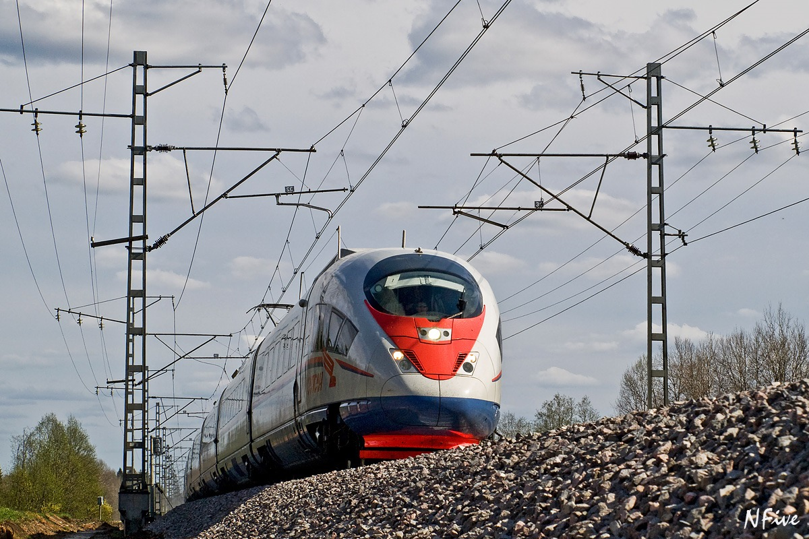

Электротранспорт — вид транспорта, использующий в качестве источника энергии электричество, а в приводе используется тяговый электродвигатель. Его основными преимуществами перед транспортом с двигателями внешнего или внутреннего сгорания являются более высокая производительность и экологичность.
В развитых странах электротранспорт является основным перевозчиком пассажиров внутри города, на его долю приходится более 50% перевозок. В развивающихся странах процент перевозок электротранспортом в городах составляет от 15%.
